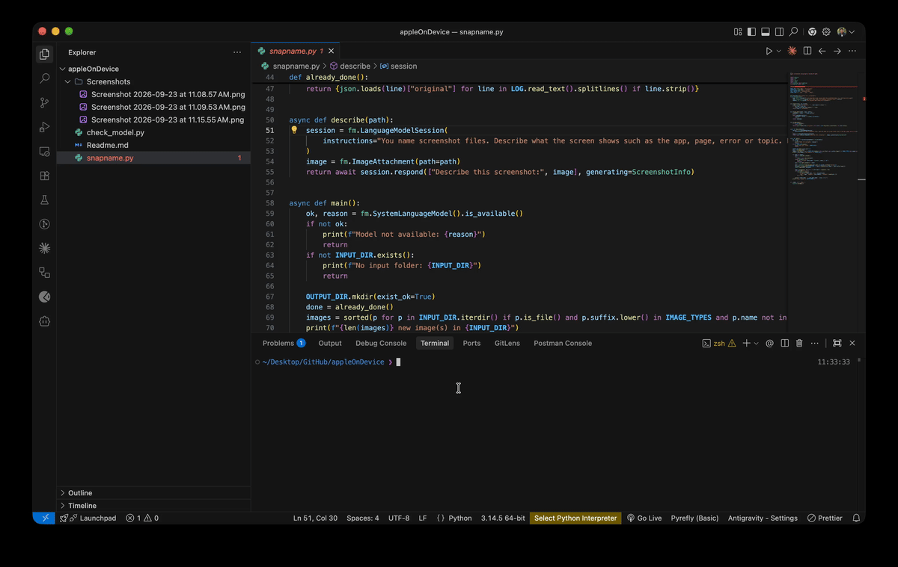

A small practical demo tool built on the on-device model behind Apple Intelligence, using Apple’s Foundation Models SDK for Python
Code Repository: github.com/jayananden-m/snapname
Since everything runs locally, it works offline, there is no need to send data anywhere.
Requirements
- Apple silicon Mac with Apple Intelligence turned on
- macOS 26 or later
- Xcode installed
- Python 3.10+
Setup
pip install apple-fm-sdk
python check_model.py # should reply with something like "an AI model trained by Apple"
python chat.py # simple live chat with Apple's on-device model in the terminal.
snapname
Current macOS names screenshots like Screenshot 2026-09-23 at 11.08.57 AM.png:
a timestamp that lacks the information about what in in the image. So instead of
connecting to an LLM provider and sending the data, this takes advantage of the
foundation model in the device with guided generation (type safe generable).
Like the response always comes back in a fixed shape, in this case: a short
name, three tags and a one-sentence summary. Right now, it copies the screenshot
image to output/ under its new name, with the date as prefix it doesn’t lose
the sorting feature. Because the new names describe the content, Spotlight can
now find a screenshot by what it shows, for example searching “resource usage
monitor”. Spotlight already finds words visible inside images; the new names add
what the screen is. It appends a line per image to output/snapname.jsonl with
the original name, new name, tags, summary and time taken, this could later be
used to search screenshots by what they show rather than by the words on screen.
python snapname.py
Example run:

3 new image(s) in Screenshots
Screenshot 2026-09-23 at 11.08.57 AM.png -> 2026-09-23_python-apple-fm-sdk-repository-page.png (7.8s)
Screenshot 2026-09-23 at 11.09.53 AM.png -> 2026-09-23_news-homepage-with-headlines-and-articles.png (3.1s)
Screenshot 2026-09-23 at 11.15.55 AM.png -> 2026-09-23_macos-resource-usage-monitor.png (3.8s)
Done. Output in output
Notes
- The first image is slower (about 8s in the run above, then 3 to 4s each), likely because the model loads on first use
- I used only one image and one short answer per call, so it stays well inside the model’s small context window.
- The generated names are mostly specific; some come out generic or long
- Guided generation using
@fm.generablereturns the typed fields, so there is no free text to parse - From the docs, we could see there is functionality for tool calling as well, which would really make better automation workflows
About the model
The on-device model is the same one behind Apple Intelligence features like Writing Tools. The section below separates what is documented for the current model from what is known about the previous one.
Current model (macOS 27)
- Context window: 8,192 tokens (4,096 on macOS 26), shared between instructions, prompt, images and the answer.
- Input types: text and images. Images are accepted at any size, but larger images use more tokens.
- Languages: all Apple Intelligence languages (15 at launch, since
expanded). A prompt in an unsupported language returns an
unsupportedLanguageerror rather than a poor answer. - Guided generation and type safety:
@fm.generableturns a Python class into a schema the model must follow. Fields can be constrained withfm.guideto allowed values, numeric ranges or exact list lengths, and classes can be nested. Decoding is constrained to the schema, so the response always parses into the class: no JSON parsing, no retries for malformed output. In Swift this is checked at compile time; in Python it is enforced at runtime. It guarantees the structure, not that the content is correct, so important values still need checking. - Streaming: responses stream as partially filled objects of the generable class rather than as raw text fragments.
- Instructions over prompts: session instructions take priority over user prompts, which limits prompt injection.
- Dynamic Profiles: a session can switch between profiles, each bundling its own instructions, tools and model, so one workflow can hand steps between specialised roles (for example a planner and a writer) as a multi-agent setup. Currently a Swift feature; the Python SDK does not document it.
- Private Cloud Compute: the same API can route a request to Apple’s server model, which has a 32K-token context window and adjustable reasoning levels, when a task needs more room or reasoning than the on-device model offers.
Previous generation (Apple’s 2025 tech report and WWDC25)
These describe the 2025 model and may not hold for the current one.
- Size: roughly 3 billion parameters, small enough to run on a phone or laptop.
- Compression: weights stored at 2 bits each, using quantization-aware training so the model learns to work within that limit instead of being squeezed after training. Low-rank adapters recover quality lost to compression.
- KV-cache sharing: the model is split into two blocks, and the second reuses the key-value cache from the first. Apple reports this cuts cache memory and time-to-first-token by about 37.5%.
- Best at: summarisation, extraction and classification. Apple stated it is not suited to world knowledge or advanced reasoning. The current model shows the same gap: asked which file types it supports, it answered PDF, Word and Excel, none of which it accepts.